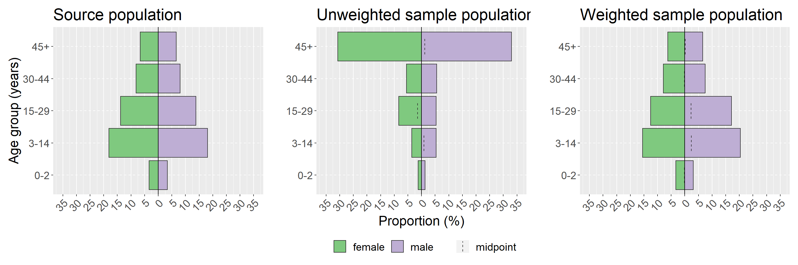
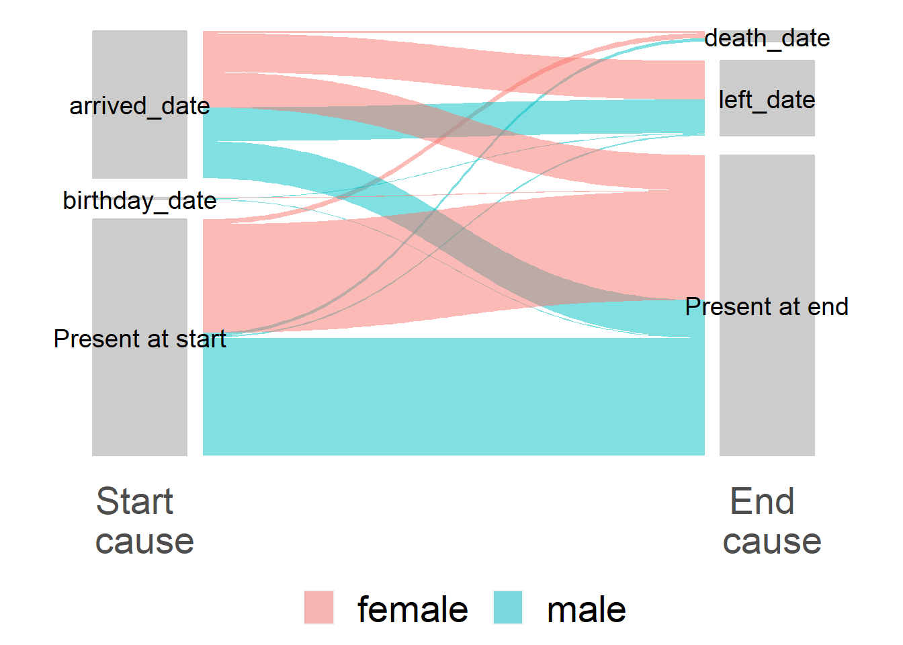

26 Phân tích khảo sát
26.1 Tổng quan
Chương này trình bày việc sử dụng một số packages để phân tích khảo sát.
Hầu hết các packages R dùng để phân tích khảo sát đều dựa trên survey package cho phân tích có trọng số. Chúng tôi sẽ sử dụng survey cũng như srvyr (cho phép survey mã hóa theo kiểu tidyverse) và gtsummary (cho phép survey tạo các bảng sẵn sàng cho xuất bản). Trong khi package survey ban đầu không cho phép mã hóa theo kiểu tidyverse, nhưng nó có điểm cộng là cho phép khảo sát được trọng số hóa mô hình tuyến tính tổng quát (sẽ được thêm vào chương này sau). Chúng tôi cũng sẽ minh họa bằng cách sử dụng một hàm từ package sitrep để tạo mẫu trọng số (lưu ý package này hiện chưa có trên CRAN, nhưng có thể được cài đặt từ github).
Hầu hết chương này dựa trên công việc đã hoàn thành của dự án “R4Epis”; để biết code chi tiết và mẫu R-markdown xem trang github của “R4Epis”. Một số package survey dựa trên các phiên bản đầu tiên của các nghiên cứuu trường hợp EPIET.
Hiện tại, chương này không đề cập đến các phép tính cỡ mẫu hoặc lấy mẫu. Để tính cỡ mẫu đơn giản, hãy xem OpenEpi. Chương GIS cơ bản trong sổ tay này sẽ có một phần về lấy mẫu ngẫu nhiên theo không gian và chương này cũng sẽ đề cập một phần về khung lấy mẫu cũng như tính toán cỡ mẫu.
- Dữ liệu khảo sát
- Thời gian quan sát
- Áp dụng trọng số
- Đối tượng thiết kế nghiên cứu
- Phân tích mô tả
- Tỷ lệ được áp dụng trọng số
- Tỷ suất được áp dụng trọng số
26.2 Chuẩn bị
Packages
Đoạn code này hiển thị việc gọi các package cần thiết cho các phân tích. Trong cuốn sách này, chúng tôi nhấn mạnh việc sử dụng hàm p_load() từ package pacman, giúp cài đặt các package cần thiết và gọi chúng ra để sử dụng. Bạn cũng có thể gọi các packages đã cài đặt với hàm library() của base R. Xem thêm chương R cơ bản để có thêm thông tin về các packages trong R. Ở đây chúng tôi cũng minh họa việc sử dụng hàm p_load_gh() từ pacman để cài đặt một package tải từ github mà chưa được công bố trên CRAN.
## load packages from CRAN
pacman::p_load(rio, # File import
here, # File locator
tidyverse, # data management + ggplot2 graphics
tsibble, # handle time series datasets
survey, # for survey functions
srvyr, # dplyr wrapper for survey package
gtsummary, # wrapper for survey package to produce tables
apyramid, # a package dedicated to creating age pyramids
patchwork, # for combining ggplots
ggforce # for alluvial/sankey plots
)
## load packages from github
pacman::p_load_gh(
"R4EPI/sitrep" # for observation time / weighting functions
)Nạp dữ liệu
Bộ dữ liệu ví dụ được sử dụng trong phần này:
- dữ liệu điều tra tỷ lệ tử vong mô phỏng.
- số lượng dân cư mô phỏng cho khu vực khảo sát.
- từ điển dữ liệu cho dữ liệu khảo sát tử vong mô phỏng.
Bộ này dựa trên khảo sát đã được phê duyệt trước của hội đồng đạo đức MSF OCA. Các tập dữ liệu mô phỏng được tạo như một phần của Dự án “R4Epis”. Tất cả đều dựa trên dữ liệu được thu thập bằng KoboToolbox, đây là một phần mềm thu thập dữ liệu dựa trên Open Data Kit.
Kobo cho phép bạn xuất cả dữ liệu đã thu thập, cũng như từ điển dữ liệu cho tập dữ liệu đó. Chúng tôi thực sự khuyên bạn nên làm điều này vì nó đơn giản hóa việc làm sạch dữ liệu và hữu ích cho việc tra cứu các biến/câu hỏi.
MẸO: Từ điển dữ liệu Kobo có tên biến trong cột “name” của sheet “survey” (khảo sát). Các giá trị có thể có cho mỗi biến được chỉ định trong sheet “choices” (lựa chọn). Trong tab lựa chọn, “name” có giá trị rút gọn và các cột “label::english” và “label::french” chứa các nhãn mô tả đầy đủ. Sử dụng hàm msf_dict_survey() của package epidict để nhập tệp excel từ điển Kobo sẽ định dạng lại tệp này cho bạn để bạn có thể dễ dàng sử dụng để code lại.
THẬN TRỌNG: Bộ dữ liệu ví dụ không giống nhau dưới dạng xuất (như trong Kobo, bạn xuất từng cấp bảng câu hỏi khác nhau) - xem phần dữ liệu khảo sát bên dưới để hợp nhất các cấp độ khác nhau.
Bộ dữ liệu được nhập bằng hàm import() từ package rio. Xem chương về Nhập xuất dữ liệu để biết các cách nhập dữ liệu khác nhau.
# import the survey data
survey_data <- rio::import("survey_data.xlsx")
# import the dictionary into R
survey_dict <- rio::import("survey_dict.xlsx") 10 hàng đầu tiên của khảo sát được hiển thị bên dưới.
Chúng ta cũng muốn nhập dữ liệu về quần thể lấy mẫu để có thể tạo ra các trọng số thích hợp. Dữ liệu này có thể ở các định dạng khác nhau, tuy nhiên chúng tôi khuyên bạn nên định dạng như hình bên dưới (dữ liệu này có thể chỉ cần nhập vào excel).
10 hàng đầu tiên của khảo sát được hiển thị bên dưới.
Đối với khảo sát theo cụm, bạn có thể muốn thêm trọng số khảo sát ở cấp cụm. Bạn có thể đọc dữ liệu này như trên. Ngoài ra, nếu số lượng ít, chúng có thể được nhập như dưới đây dưới dạng một tibble. Trong mọi trường hợp, bạn sẽ cần có một cột với mã định danh cụm khớp với dữ liệu khảo sát của bạn và một cột khác với số lượng hộ gia đình ở từng cụm.
Làm sạch dữ liệu
Dưới đây đảm bảo rằng cột ngày ở định dạng thích hợp. Có một số cách khác để thực hiện việc này (xem chương Làm việc với ngày tháng để biết chi tiết), tuy nhiên sử dụng từ điển để xác định ngày sẽ nhanh chóng và dễ dàng.
Chúng tôi cũng tạo một biến nhóm tuổi bằng cách sử dụng hàm age_categories() từ epikit - xem phần Làm sạch dữ liệu của sổ tay để biết chi tiết. Ngoài ra, chúng tôi tạo một biến ký tự xác định các cụm khác nhau nằm trong khu vực nào.
Cuối cùng, chúng tôi mã hóa lại tất cả các biến yes/no thành các biến TRUE/FALSE - nếu không, các biến này không thể được sử dụng bởi các hàm tính tỷ lệ trong package survey.
## select the date variable names from the dictionary
DATEVARS <- survey_dict %>%
filter(type == "date") %>%
filter(name %in% names(survey_data)) %>%
## filter to match the column names of your data
pull(name) # select date vars
## change to dates
survey_data <- survey_data %>%
mutate(across(all_of(DATEVARS), as.Date))
## add those with only age in months to the year variable (divide by twelve)
survey_data <- survey_data %>%
mutate(age_years = if_else(is.na(age_years),
age_months / 12,
age_years))
## define age group variable
survey_data <- survey_data %>%
mutate(age_group = age_categories(age_years,
breakers = c(0, 3, 15, 30, 45)
))
## create a character variable based off groups of a different variable
survey_data <- survey_data %>%
mutate(health_district = case_when(
cluster_number %in% c(1:5) ~ "district_a",
TRUE ~ "district_b"
))
## select the yes/no variable names from the dictionary
YNVARS <- survey_dict %>%
filter(type == "yn") %>%
filter(name %in% names(survey_data)) %>%
## filter to match the column names of your data
pull(name) # select yn vars
## change to dates
survey_data <- survey_data %>%
mutate(across(all_of(YNVARS),
str_detect,
pattern = "yes"))26.3 Dữ liệu khảo sát
Có rất nhiều thiết kế lấy mẫu khác nhau có thể được sử dụng cho các khảo sát. Ở đây chúng tôi sẽ trình bày code cho: - Phân tầng - Cụm - Cụm phân tầng
Như đã mô tả ở trên (tùy thuộc vào cách bạn thiết kế bảng câu hỏi của mình), dữ liệu cho mỗi cấp độ sẽ được xuất dưới dạng bộ dữ liệu riêng biệt từ Kobo. Trong ví dụ của chúng tôi, có một cấp cho các hộ gia đình và một cấp cho các cá nhân trong các hộ gia đình đó.
Hai cấp độ này được liên kết bởi một mã định danh duy nhất. Đối với bộ dữ liệu Kobo, biến này là “_index” ở cấp hộ gia đình, khớp với “_parent_index” ở cấp cá nhân. Thao tác này sẽ tạo các hàng mới cho hộ gia đình với mỗi cá nhân phù hợp, hãy xem chương Nối dữ liệu để biết chi tiết.
## join the individual and household data to form a complete data set
survey_data <- left_join(survey_data_hh,
survey_data_indiv,
by = c("_index" = "_parent_index"))
## create a unique identifier by combining indeces of the two levels
survey_data <- survey_data %>%
mutate(uid = str_glue("{index}_{index_y}"))26.4 Thời gian quan sát
Đối với các cuộc khảo sát về tỷ lệ tử vong, chúng ta muốn biết mỗi cá nhân đã có mặt tại địa điểm trong bao lâu để có thể tính toán tỷ lệ tử vong thích hợp trong khoảng thời gian nghiên cứu. Điều này không áp dụng đối với tất cả các cuộc điều tra, nhưng đặc biệt rất quan trọng đối với các cuộc điều tra tử vong vì chúng thường được khảo sát ở các quần thể di động hoặc di cư.
Để làm điều này, trước tiên chúng ta xác định khoảng thời gian quan tâm, còn được gọi là khoảng thời gian hồi cứu (tức là thời gian mà những người tham gia được yêu cầu báo cáo khi trả lời câu hỏi). Sau đó, chúng ta có thể sử dụng khoảng thời gian này để đặt các ngày không thích hợp thành giá trị missing, vd: các trường hợp tử vong được báo cáo ngoài khoảng thời gian quan tâm.
## set the start/end of recall period
## can be changed to date variables from dataset
## (e.g. arrival date & date questionnaire)
survey_data <- survey_data %>%
mutate(recall_start = as.Date("2018-01-01"),
recall_end = as.Date("2018-05-01")
)
# set inappropriate dates to NA based on rules
## e.g. arrivals before start, departures departures after end
survey_data <- survey_data %>%
mutate(
arrived_date = if_else(arrived_date < recall_start,
as.Date(NA),
arrived_date),
birthday_date = if_else(birthday_date < recall_start,
as.Date(NA),
birthday_date),
left_date = if_else(left_date > recall_end,
as.Date(NA),
left_date),
death_date = if_else(death_date > recall_end,
as.Date(NA),
death_date)
)Sau đó, chúng ta có thể sử dụng các biến ngày của mình để xác định ngày bắt đầu và ngày kết thúc cho từng cá nhân. Chúng ta có thể sử dụng hàm find_start_date() từ sitrep để xác định ngày bắt đầu và sau đó sử dụng hàm đó để tính toán sự khác biệt giữa các ngày (người-thời gian).
Ngày bắt đầu: Sự kiện phù hợp tới sớm nhất trong khoảng thời gian hồi cứu của bạn. Hoặc là ngày bắt đầu thời gian hồi cứu của bạn (mà bạn xác định trước) hoặc ngày sau khi bắt đầu hồi cứu nếu có (ví dụ: đi đến hoặc sinh ra)
Ngày kết thúc: Sự kiện dừng lại thích hợp sớm nhất trong thời gian hồi cứu của bạn. Hoặc là ngày kết thúc thời gian hồi cứu hoặc ngày trước khi kết thúc hồi cứu nếu có (ví dụ: rời đi, tử vong)
## create new variables for start and end dates/causes
survey_data <- survey_data %>%
## choose earliest date entered in survey
## from births, household arrivals, and camp arrivals
find_start_date("birthday_date",
"arrived_date",
period_start = "recall_start",
period_end = "recall_end",
datecol = "startdate",
datereason = "startcause"
) %>%
## choose earliest date entered in survey
## from camp departures, death and end of the study
find_end_date("left_date",
"death_date",
period_start = "recall_start",
period_end = "recall_end",
datecol = "enddate",
datereason = "endcause"
)
## label those that were present at the start/end (except births/deaths)
survey_data <- survey_data %>%
mutate(
## fill in start date to be the beginning of recall period (for those empty)
startdate = if_else(is.na(startdate), recall_start, startdate),
## set the start cause to present at start if equal to recall period
## unless it is equal to the birth date
startcause = if_else(startdate == recall_start & startcause != "birthday_date",
"Present at start", startcause),
## fill in end date to be end of recall period (for those empty)
enddate = if_else(is.na(enddate), recall_end, enddate),
## set the end cause to present at end if equall to recall end
## unless it is equal to the death date
endcause = if_else(enddate == recall_end & endcause != "death_date",
"Present at end", endcause))
## Define observation time in days
survey_data <- survey_data %>%
mutate(obstime = as.numeric(enddate - startdate))26.5 Áp dụng trọng số
Điều quan trọng là bạn phải loại bỏ các đối tượng có lỗi trước khi thêm trọng số khảo sát. Ví dụ: nếu bạn có các quan sát với thời gian theo dõi âm, bạn sẽ cần kiểm tra các đối tượng đó (bạn có thể thực hiện việc này với hàm assert_positive_timespan() từ sitrep. Một điều khác là nếu bạn muốn bỏ các hàng trống (ví dụ: với drop_na(uid)) hoặc xóa các bản ghi trùng lặp (xem chương Loại bỏ trùng lặp trong sổ tay này để biết thêm chi tiết). Những đối tượng không có sự đồng ý tham gia nghiên cứu cũng cần phải bị xóa.
Trong ví dụ này, chúng ta lọc các trường hợp muốn loại bỏ và lưu trữ chúng trong một dataframe riêng - theo cách này, chúng ta có thể mô tả những trường hợp đã bị loại khỏi khảo sát. Sau đó, chúng ta sử dụng hàm anti_join() từ dplyr để xóa những trường hợp bị loại bỏ này khỏi dữ liệu khảo sát của chúng ta.
NGUY HIỂM: Bạn không thể có giá trị missing trong biến trọng số của mình hoặc bất kỳ biến nào có liên quan đến thiết kế khảo sát của bạn (ví dụ: tuổi, giới tính, biến phân tầng hoặc cụm).
## store the cases that you drop so you can describe them (e.g. non-consenting
## or wrong village/cluster)
dropped <- survey_data %>%
filter(!consent | is.na(startdate) | is.na(enddate) | village_name == "other")
## use the dropped cases to remove the unused rows from the survey data set
survey_data <- anti_join(survey_data, dropped, by = names(dropped))Như đã đề cập ở trên, chúng tôi trình bày cách thêm trọng số cho ba thiết kế nghiên cứu khác nhau (phân tầng, phân cụm và cụm phân tầng). Chúng yêu cầu thông tin về dân số gốc và/hoặc các cụm được khảo sát. Chúng tôi sẽ sử dụng code cụm phân tầng cho ví dụ này, nhưng hãy sử dụng code nào thích hợp nhất cho thiết kế nghiên cứu của bạn.
# stratified ------------------------------------------------------------------
# create a variable called "surv_weight_strata"
# contains weights for each individual - by age group, sex and health district
survey_data <- add_weights_strata(x = survey_data,
p = population,
surv_weight = "surv_weight_strata",
surv_weight_ID = "surv_weight_ID_strata",
age_group, sex, health_district)
## cluster ---------------------------------------------------------------------
# get the number of people of individuals interviewed per household
# adds a variable with counts of the household (parent) index variable
survey_data <- survey_data %>%
add_count(index, name = "interviewed")
## create cluster weights
survey_data <- add_weights_cluster(x = survey_data,
cl = cluster_counts,
eligible = member_number,
interviewed = interviewed,
cluster_x = village_name,
cluster_cl = cluster,
household_x = index,
household_cl = households,
surv_weight = "surv_weight_cluster",
surv_weight_ID = "surv_weight_ID_cluster",
ignore_cluster = FALSE,
ignore_household = FALSE)
# stratified and cluster ------------------------------------------------------
# create a survey weight for cluster and strata
survey_data <- survey_data %>%
mutate(surv_weight_cluster_strata = surv_weight_strata * surv_weight_cluster)26.6 Đối tượng theo thiết kế nghiên cứu
Tạo đối tượng khảo sát theo thiết kế nghiên cứu của bạn. Sử dụng theo cách tương tự như dataframe để tính toán trọng số cho tỷ lệ, v.v. Đảm bảo rằng tất cả các biến cần thiết đã được tạo trước bước này.
Có bốn tùy chọn, hãy đánh dấu thành bình luận những tùy chọn bạn không sử dụng: - Ngẫu nhiên đơn - Phân tầng - Cụm - Cụm phân tầng
Đối với mẫu này - chúng ta sẽ giả vờ rằng chúng ta nhóm cụm các cuộc khảo sát theo hai tầng riêng biệt (khu vực A và B). Vì vậy, để có được ước tính tổng thể, chúng ta cần có trọng số kết hợp của cụm và tầng.
Như đã đề cập trước đây, có hai packages có sẵn để thực hiện việc này. Package cổ điển là survey và một package gọn hơn được gọi là srvyr giúp tạo các đối tượng và hàm theo phong cách tidyverse. Chúng tôi sẽ trình bày cả hai, nhưng lưu ý rằng hầu hết code trong chương này sẽ sử dụng các đối tượng dựa trên srvyr. Một ngoại lệ là package gtsummary chỉ chấp nhận các đối tượng từ package survey.
26.6.1 Package Survey
Package survey sử dụng hiệu quả code base R nên không thể sử dụng các pipes (%>%) hoặc các cú pháp dplyr khác. Với package survey, chúng tôi sử dụng hàm svydesign() để xác định đối tượng khảo sát với các cụm, trọng số và tầng thích hợp.
LƯU Ý: chúng ta cần sử dụng dấu ngã (~) trước các biến, điều này là do package sử dụng cú pháp base R để gán các biến dựa trên công thức.
# simple random ---------------------------------------------------------------
base_survey_design_simple <- svydesign(ids = ~1, # 1 for no cluster ids
weights = NULL, # No weight added
strata = NULL, # sampling was simple (no strata)
data = survey_data # have to specify the dataset
)
## stratified ------------------------------------------------------------------
base_survey_design_strata <- svydesign(ids = ~1, # 1 for no cluster ids
weights = ~surv_weight_strata, # weight variable created above
strata = ~health_district, # sampling was stratified by district
data = survey_data # have to specify the dataset
)
# cluster ---------------------------------------------------------------------
base_survey_design_cluster <- svydesign(ids = ~village_name, # cluster ids
weights = ~surv_weight_cluster, # weight variable created above
strata = NULL, # sampling was simple (no strata)
data = survey_data # have to specify the dataset
)
# stratified cluster ----------------------------------------------------------
base_survey_design <- svydesign(ids = ~village_name, # cluster ids
weights = ~surv_weight_cluster_strata, # weight variable created above
strata = ~health_district, # sampling was stratified by district
data = survey_data # have to specify the dataset
)26.6.2 Package Srvyr
Với package srvyr, chúng ta có thể sử dụng hàm as_survey_design(), nó có tất cả các đối số tương tự như trên nhưng cho phép dùng các pipes (%>%), và vì vậy chúng ta không cần sử dụng dấu ngã (~).
## simple random ---------------------------------------------------------------
survey_design_simple <- survey_data %>%
as_survey_design(ids = 1, # 1 for no cluster ids
weights = NULL, # No weight added
strata = NULL # sampling was simple (no strata)
)
## stratified ------------------------------------------------------------------
survey_design_strata <- survey_data %>%
as_survey_design(ids = 1, # 1 for no cluster ids
weights = surv_weight_strata, # weight variable created above
strata = health_district # sampling was stratified by district
)
## cluster ---------------------------------------------------------------------
survey_design_cluster <- survey_data %>%
as_survey_design(ids = village_name, # cluster ids
weights = surv_weight_cluster, # weight variable created above
strata = NULL # sampling was simple (no strata)
)
## stratified cluster ----------------------------------------------------------
survey_design <- survey_data %>%
as_survey_design(ids = village_name, # cluster ids
weights = surv_weight_cluster_strata, # weight variable created above
strata = health_district # sampling was stratified by district
)26.7 Phân tích mô tả
Phân tích mô tả và trực quan hóa cơ bản được đề cập nhiều trong các chương khác của cuốn sổ tay, vì vậy chúng tôi sẽ không đi sâu vào nó ở đây. Để biết chi tiết, hãy xem các chương về Bảng mô tả, Các kiểm định thống kê cơ bản, Trình bày bảng, ggplot cơ bản và Báo cáo với R Markdown.
Trong phần này, chúng ta sẽ tập trung vào cách điều tra sai số trong mẫu của bạn và trực quan hóa chúng. Chúng ta cũng sẽ xem xét việc trực quan hóa dòng dân cư trong bối cảnh khảo sát bằng cách sử dụng sơ đồ luồng alluvial/sankey.
Nhìn chung, bạn nên xem xét đưa vào các phân tích mô tả sau:
- Số cụm, hộ gia đình và cá nhân cuối cùng được đưa vào
- Số lượng cá nhân bị loại trừ và lý do loại trừ
- Trung vị (biên độ) số hộ gia đình trên một cụm và số cá thể trên một hộ gia đình
26.7.1 Sai số chọn mẫu
So sánh tỷ lệ trong từng nhóm tuổi giữa mẫu của bạn và quần thể gốc. Điều này rất quan trọng để có thể làm nổi bật sai số chọn mẫu tiềm ẩn. Tương tự, bạn có thể lặp lại điều này khi xem xét sự phân bố theo giới tính.
Lưu ý rằng các giá trị p từ phép kiểm định hai nhóm chỉ mang tính chất chỉ dẫn và phần thảo luận mang tính mô tả (hoặc trực quan với tháp tuổi bên dưới) về các phân bố trong mẫu nghiên cứu của bạn so với quần thể gốc là quan trọng. Đó là bởi vì việc tăng cỡ mẫu sẽ hay dẫn đến những khác biệt có thể không liên quan sau khi áp dụng trọng số vào dữ liệu của bạn.
## counts and props of the study population
ag <- survey_data %>%
group_by(age_group) %>%
drop_na(age_group) %>%
tally() %>%
mutate(proportion = n / sum(n),
n_total = sum(n))
## counts and props of the source population
propcount <- population %>%
group_by(age_group) %>%
tally(population) %>%
mutate(proportion = n / sum(n))
## bind together the columns of two tables, group by age, and perform a
## binomial test to see if n/total is significantly different from population
## proportion.
## suffix here adds to text to the end of columns in each of the two datasets
left_join(ag, propcount, by = "age_group", suffix = c("", "_pop")) %>%
group_by(age_group) %>%
## broom::tidy(binom.test()) makes a data frame out of the binomial test and
## will add the variables p.value, parameter, conf.low, conf.high, method, and
## alternative. We will only use p.value here. You can include other
## columns if you want to report confidence intervals
mutate(binom = list(broom::tidy(binom.test(n, n_total, proportion_pop)))) %>%
unnest(cols = c(binom)) %>% # important for expanding the binom.test data frame
mutate(proportion_pop = proportion_pop * 100) %>%
## Adjusting the p-values to correct for false positives
## (because testing multiple age groups). This will only make
## a difference if you have many age categories
mutate(p.value = p.adjust(p.value, method = "holm")) %>%
## Only show p-values over 0.001 (those under report as <0.001)
mutate(p.value = ifelse(p.value < 0.001,
"<0.001",
as.character(round(p.value, 3)))) %>%
## rename the columns appropriately
select(
"Age group" = age_group,
"Study population (n)" = n,
"Study population (%)" = proportion,
"Source population (n)" = n_pop,
"Source population (%)" = proportion_pop,
"P-value" = p.value
)## # A tibble: 5 × 6
## # Groups: Age group [5]
## `Age group` `Study population (n)` `Study population (%)` `Source population (n)`
## <chr> <int> <dbl> <dbl>
## 1 0-2 12 0.0256 1360
## 2 3-14 42 0.0896 7244
## 3 15-29 64 0.136 5520
## 4 30-44 52 0.111 3232
## 5 45+ 299 0.638 2644
## # ℹ 2 more variables: `Source population (%)` <dbl>, `P-value` <chr>26.7.2 Tháp dân số
Tháp dân số (hoặc tháp tuổi-giới) là một cách dễ dàng để trực quan hóa sự phân bố trong quần thể khảo sát của bạn. Cũng nên xem xét việc tạo Bảng mô tả về độ tuổi và giới tính theo tầng khảo sát. Chúng ta sẽ minh họa bằng package apyramid vì nó cho phép các tỷ lệ được áp dụng trọng số sử dụng đối tượng theo thiết kế nghiên cứu mà chúng ta đã tạo ở trên. Các tùy chọn khác để tạo Tháp dân số được đề cập nhiều hơn trong chương đó của sổ tay. Chúng ta cũng sẽ sử dụng một hàm trong package apyramid là age_pyramid() để code ngắn gọn hơn một biểu đồ theo tỷ lệ.
Giống như với phép kiểm định sự khác biệt giữa hai nhóm chuẩn được thảo luận ở trên trong phần sai số chọn mẫu, ở đây chúng ta quan tâm đến việc trực quan hóa liệu quần thể mẫu của chúng ta có khác biệt đáng kể so với quần thể gốc hay không, và liệu trọng số có sửa chữa được sự khác biệt này hay không. Để làm điều này, chúng ta sẽ sử dụng package patchwork để hiển thị các biểu đồ tạo bởi ggplot song song với nhau; chi tiết xem phần kết hợp các đồ thị trong chương Các tips với ggplot của sổ tay này. Chúng ta sẽ trực quan hóa quần thể gốc, quần thể khảo sát không trọng số và quần thể khảo sát có trọng số. Bạn cũng có thể xem xét trực quan theo từng tầng của khảo sát - bằng cách sử dụng đối số stack_by = "health_district" trong ví dụ của chúng tôi ở đây (xem ?plot_age_pyramid để biết chi tiết).
Lưu ý: Trục x và y được lật ngược trong tháp
## define x-axis limits and labels ---------------------------------------------
## (update these numbers to be the values for your graph)
max_prop <- 35 # choose the highest proportion you want to show
step <- 5 # choose the space you want beween labels
## this part defines vector using the above numbers with axis breaks
breaks <- c(
seq(max_prop/100 * -1, 0 - step/100, step/100),
0,
seq(0 + step / 100, max_prop/100, step/100)
)
## this part defines vector using the above numbers with axis limits
limits <- c(max_prop/100 * -1, max_prop/100)
## this part defines vector using the above numbers with axis labels
labels <- c(
seq(max_prop, step, -step),
0,
seq(step, max_prop, step)
)
## create plots individually --------------------------------------------------
## plot the source population
## nb: this needs to be collapsed for the overall population (i.e. removing health districts)
source_population <- population %>%
## ensure that age and sex are factors
mutate(age_group = factor(age_group,
levels = c("0-2",
"3-14",
"15-29",
"30-44",
"45+")),
sex = factor(sex)) %>%
group_by(age_group, sex) %>%
## add the counts for each health district together
summarise(population = sum(population)) %>%
## remove the grouping so can calculate overall proportion
ungroup() %>%
mutate(proportion = population / sum(population)) %>%
## plot pyramid
age_pyramid(
age_group = age_group,
split_by = sex,
count = proportion,
proportional = TRUE) +
## only show the y axis label (otherwise repeated in all three plots)
labs(title = "Source population",
y = "",
x = "Age group (years)") +
## make the x axis the same for all plots
scale_y_continuous(breaks = breaks,
limits = limits,
labels = labels)
## plot the unweighted sample population
sample_population <- age_pyramid(survey_data,
age_group = "age_group",
split_by = "sex",
proportion = TRUE) +
## only show the x axis label (otherwise repeated in all three plots)
labs(title = "Unweighted sample population",
y = "Proportion (%)",
x = "") +
## make the x axis the same for all plots
scale_y_continuous(breaks = breaks,
limits = limits,
labels = labels)
## plot the weighted sample population
weighted_population <- survey_design %>%
## make sure the variables are factors
mutate(age_group = factor(age_group),
sex = factor(sex)) %>%
age_pyramid(
age_group = "age_group",
split_by = "sex",
proportion = TRUE) +
## only show the x axis label (otherwise repeated in all three plots)
labs(title = "Weighted sample population",
y = "",
x = "") +
## make the x axis the same for all plots
scale_y_continuous(breaks = breaks,
limits = limits,
labels = labels)
## combine all three plots ----------------------------------------------------
## combine three plots next to eachother using +
source_population + sample_population + weighted_population +
## only show one legend and define theme
## note the use of & for combining theme with plot_layout()
plot_layout(guides = "collect") &
theme(legend.position = "bottom", # move legend to bottom
legend.title = element_blank(), # remove title
text = element_text(size = 18), # change text size
axis.text.x = element_text(angle = 45, hjust = 1, vjust = 1) # turn x-axis text
)
26.7.3 Sơ đồ alluvial/sankey
Trực quan điểm bắt đầu và kết quả của từng cá nhân có thể rất hữu ích để có được cái nhìn tổng quan. Có một ứng dụng khá rõ ràng cho quần thể di động, tuy nhiên có rất nhiều ứng dụng khác như nhóm thuần tập hoặc bất kỳ tình huống nào khác trong đó có sự chuyển đổi ở các trạng thái của các cá nhân. Các sơ đồ này có một số tên khác nhau bao gồm các tập hợp alluvial, sankey và parallel - chi tiết có trong chương sổ tay về Sơ đồ và biểu đồ.
## summarize data
flow_table <- survey_data %>%
count(startcause, endcause, sex) %>% # get counts
gather_set_data(x = c("startcause", "endcause")) # change format for plotting
## plot your dataset
## on the x axis is the start and end causes
## gather_set_data generates an ID for each possible combination
## splitting by y gives the possible start/end combos
## value as n gives it as counts (could also be changed to proportion)
ggplot(flow_table, aes(x, id = id, split = y, value = n)) +
## colour lines by sex
geom_parallel_sets(aes(fill = sex), alpha = 0.5, axis.width = 0.2) +
## fill in the label boxes grey
geom_parallel_sets_axes(axis.width = 0.15, fill = "grey80", color = "grey80") +
## change text colour and angle (needs to be adjusted)
geom_parallel_sets_labels(color = "black", angle = 0, size = 5) +
## remove axis labels
theme_void()+
## move legend to bottom
theme(legend.position = "bottom") 
26.8 Tỷ lệ được áp dụng trọng số
Phần này sẽ trình bày chi tiết cách tạo bảng cho số lượng và tỷ lệ được áp dụng trọng số, với khoảng tin cậy và hệ số thiết kế liên quan. Có bốn tùy chọn khác nhau sử dụng các hàm từ các packages sau: survey, srvyr, sitrep và gtsummary. Để tạo ra một bảng dịch tễ học tiêu chuẩn với code tối giản, chúng tôi khuyên bạn nên dùng hàm sitrep - là một hàm có code gọn hơn của srvyr; Tuy nhiên, lưu ý rằng hàm này chưa có trên CRAN và có thể thay đổi trong tương lai. Mặt khác, code của survey có thể là code ổn định nhất trong thời gian dài, trong khi srvyr sẽ phù hợp nhất đối với các luồng công việc sử dụng tidyverse. Mặc dù các hàm gtsummary có rất nhiều tiềm năng, nhưng chúng vẫn đang được thử nghiệm và chưa hoàn thiện tại thời điểm viết chương này.
26.8.1 Package survey
Chúng ta có thể sử dụng hàm svyciprop() từ survey để lấy tỷ lệ có trọng số và khoảng tin cậy 95% đi kèm. Một hệ số thiết kế thích hợp có thể được trích xuất bằng cách sử dụng hàm svymean() chứ không phải hàm svyprop(). Cần lưu ý rằng svyprop() dường như chỉ chấp nhận các biến có giá trị từ 0 đến 1 (hoặc TRUE/FALSE), vì vậy các biến phân loại sẽ không hoạt động.
LƯU Ý: Các hàm từ survey cũng chấp nhận các đối tượng thiết kế từ srvyr, nhưng ở đây chúng tôi đã sử dụng đối tượng thiết kế từ package survey với mục đích tạo sự nhất quán
## died
## FALSE TRUE
## 1406244.43 76213.01## 2.5% 97.5%
## died 0.0514 0.0208 0.12## diedFALSE diedTRUE
## 3.755508 3.755508Chúng ta có thể kết hợp các hàm từ survey được hiển thị ở trên với một hàm mà chúng ta tự định nghĩa như bên dưới, được gọi là svy_prop; và sau đó chúng ta có thể sử dụng hàm đó cùng với hàm map() từ package purrr để lặp qua một số biến và tạo một bảng. Xem chương Lặp, vòng lặp, và danh sách để biết chi tiết về purrr.
# Define function to calculate weighted counts, proportions, CI and design effect
# x is the variable in quotation marks
# design is your survey design object
svy_prop <- function(design, x) {
## put the variable of interest in a formula
form <- as.formula(paste0( "~" , x))
## only keep the TRUE column of counts from svytable
weighted_counts <- svytable(form, design)[[2]]
## calculate proportions (multiply by 100 to get percentages)
weighted_props <- svyciprop(form, design, na.rm = TRUE) * 100
## extract the confidence intervals and multiply to get percentages
weighted_confint <- confint(weighted_props) * 100
## use svymean to calculate design effect and only keep the TRUE column
design_eff <- deff(svymean(form, design, na.rm = TRUE, deff = TRUE))[[TRUE]]
## combine in to one data frame
full_table <- cbind(
"Variable" = x,
"Count" = weighted_counts,
"Proportion" = weighted_props,
weighted_confint,
"Design effect" = design_eff
)
## return table as a dataframe
full_table <- data.frame(full_table,
## remove the variable names from rows (is a separate column now)
row.names = NULL)
## change numerics back to numeric
full_table[ , 2:6] <- as.numeric(full_table[, 2:6])
## return dataframe
full_table
}
## iterate over several variables to create a table
purrr::map(
## define variables of interest
c("left", "died", "arrived"),
## state function using and arguments for that function (design)
svy_prop, design = base_survey_design) %>%
## collapse list in to a single data frame
bind_rows() %>%
## round
mutate(across(where(is.numeric), round, digits = 1))## Variable Count Proportion X2.5. X97.5. Design.effect
## 1 left 701199.1 47.3 39.2 55.5 2.4
## 2 died 76213.0 5.1 2.1 12.1 3.8
## 3 arrived 761799.0 51.4 40.9 61.7 3.926.8.2 Package srvyr
Với srvyr chúng ta có thể sử dụng cú pháp của package dplyr để tạo một bảng. Lưu ý rằng hàm survey_mean() được sử dụng, đối số tỷ lệ được chỉ định và hàm tương tự cũng được sử dụng để tính toán hệ số thiết kế. Điều này là do srvyr bao gồm cả hai hàm svyciprop() và svymean() của package survey được sử dụng trong phần trên.
LƯU Ý: Có vẻ như không thể lấy tỷ lệ từ các biến phân loại bằng srvyr, nếu bạn cần điều này, hãy xem phần bên dưới sử dụng sitrep
## use the srvyr design object
survey_design %>%
summarise(
## produce the weighted counts
counts = survey_total(died),
## produce weighted proportions and confidence intervals
## multiply by 100 to get a percentage
props = survey_mean(died,
proportion = TRUE,
vartype = "ci") * 100,
## produce the design effect
deff = survey_mean(died, deff = TRUE)) %>%
## only keep the rows of interest
## (drop standard errors and repeat proportion calculation)
select(counts, props, props_low, props_upp, deff_deff)## # A tibble: 1 × 5
## counts props props_low props_upp deff_deff
## <dbl> <dbl> <dbl> <dbl> <dbl>
## 1 76213. 5.14 2.08 12.1 3.76Ở đây, chúng ta cũng có thể viết một hàm để sau đó lặp qua nhiều biến bằng cách sử dụng package purrr. Xem chương Lặp, vòng lặp, và danh sách trong sổ tay này để biết chi tiết về purrr.
# Define function to calculate weighted counts, proportions, CI and design effect
# design is your survey design object
# x is the variable in quotation marks
srvyr_prop <- function(design, x) {
summarise(
## using the survey design object
design,
## produce the weighted counts
counts = survey_total(.data[[x]]),
## produce weighted proportions and confidence intervals
## multiply by 100 to get a percentage
props = survey_mean(.data[[x]],
proportion = TRUE,
vartype = "ci") * 100,
## produce the design effect
deff = survey_mean(.data[[x]], deff = TRUE)) %>%
## add in the variable name
mutate(variable = x) %>%
## only keep the rows of interest
## (drop standard errors and repeat proportion calculation)
select(variable, counts, props, props_low, props_upp, deff_deff)
}
## iterate over several variables to create a table
purrr::map(
## define variables of interest
c("left", "died", "arrived"),
## state function using and arguments for that function (design)
~srvyr_prop(.x, design = survey_design)) %>%
## collapse list in to a single data frame
bind_rows()## # A tibble: 3 × 6
## variable counts props props_low props_upp deff_deff
## <chr> <dbl> <dbl> <dbl> <dbl> <dbl>
## 1 left 701199. 47.3 39.2 55.5 2.38
## 2 died 76213. 5.14 2.08 12.1 3.76
## 3 arrived 761799. 51.4 40.9 61.7 3.9326.8.3 Package sitrep
Hàm tab_survey() từ sitrep là một hàm gọn hơn cho srvyr, cho phép bạn tạo các bảng có trọng số với code tối giản. Nó cũng cho phép bạn tính toán tỷ lệ có trọng số cho các biến phân loại.
## using the survey design object
survey_design %>%
## pass the names of variables of interest unquoted
tab_survey(arrived, left, died, education_level,
deff = TRUE, # calculate the design effect
pretty = TRUE # merge the proportion and 95%CI
)## Warning: removing 257 missing value(s) from `education_level`## # A tibble: 9 × 5
## variable value n deff ci
## <chr> <chr> <dbl> <dbl> <chr>
## 1 arrived TRUE 761799. 3.93 51.4% (40.9-61.7)
## 2 arrived FALSE 720658. 3.93 48.6% (38.3-59.1)
## 3 left TRUE 701199. 2.38 47.3% (39.2-55.5)
## 4 left FALSE 781258. 2.38 52.7% (44.5-60.8)
## 5 died TRUE 76213. 3.76 5.1% (2.1-12.1)
## 6 died FALSE 1406244. 3.76 94.9% (87.9-97.9)
## 7 education_level higher 171644. 4.70 42.4% (26.9-59.7)
## 8 education_level primary 102609. 2.37 25.4% (16.2-37.3)
## 9 education_level secondary 130201. 6.68 32.2% (16.5-53.3)26.8.4 Package gtsummary
Với gtsummary, dường như vẫn chưa có hàm sẵn có để thêm khoảng tin cậy hoặc hệ số thiết kế. Ở đây chúng tôi trình bày cách định nghĩa một hàm để thêm khoảng tin cậy và sau đó thêm khoảng tin cậy vào bảng được tạo bằng gtsummary với hàm tbl_svysummary().
confidence_intervals <- function(data, variable, by, ...) {
## extract the confidence intervals and multiply to get percentages
props <- svyciprop(as.formula(paste0( "~" , variable)),
data, na.rm = TRUE)
## extract the confidence intervals
as.numeric(confint(props) * 100) %>% ## make numeric and multiply for percentage
round(., digits = 1) %>% ## round to one digit
c(.) %>% ## extract the numbers from matrix
paste0(., collapse = "-") ## combine to single character
}
## using the survey package design object
tbl_svysummary(base_survey_design,
include = c(arrived, left, died), ## define variables want to include
statistic = list(everything() ~ c("{n} ({p}%)"))) %>% ## define stats of interest
add_n() %>% ## add the weighted total
add_stat(fns = everything() ~ confidence_intervals) %>% ## add CIs
## modify the column headers
modify_header(
list(
n ~ "**Weighted total (N)**",
stat_0 ~ "**Weighted Count**",
add_stat_1 ~ "**95%CI**"
)
)| Characteristic | Weighted total (N) | Weighted Count1 | 95%CI |
|---|---|---|---|
| arrived | 1,482,457 | 761,799 (51%) | 40.9-61.7 |
| left | 1,482,457 | 701,199 (47%) | 39.2-55.5 |
| died | 1,482,457 | 76,213 (5.1%) | 2.1-12.1 |
| 1 n (%) | |||
26.9 Tỷ suất được áp dụng trọng số
Tương tự đối với các tỷ lệ được áp dụng trọng số (chẳng hạn như tỷ lệ tử vong), bạn có thể sử dụng package survey hoặc srvyr. Tương tự, bạn có thể viết các hàm (tương tự như ở trên) để lặp qua một số biến. Bạn cũng có thể tạo một hàm cho gtsummary như trên nhưng hiện tại nó không có chức năng sẵn có.